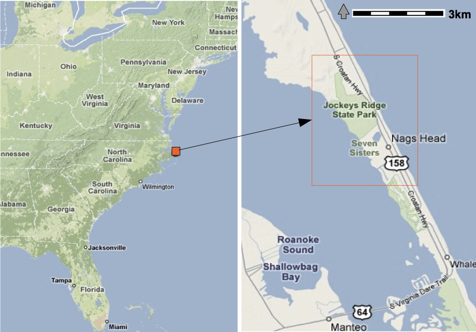
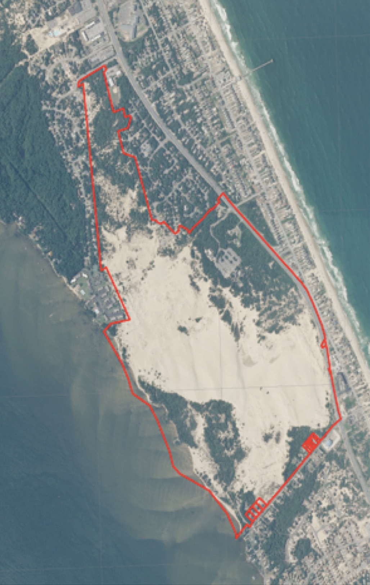
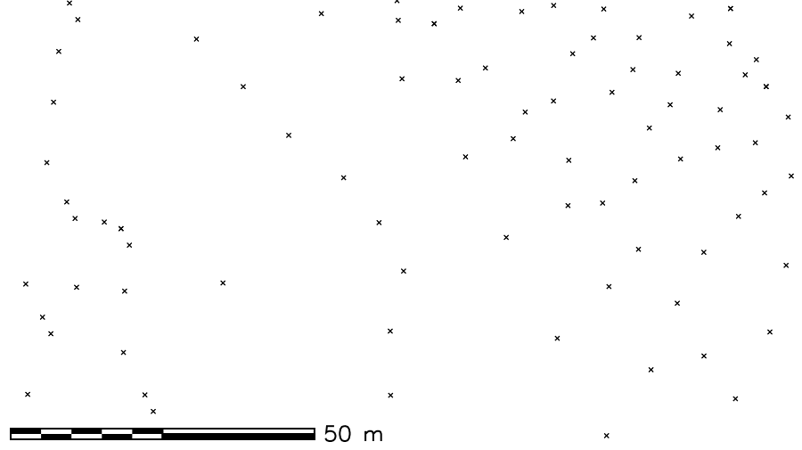
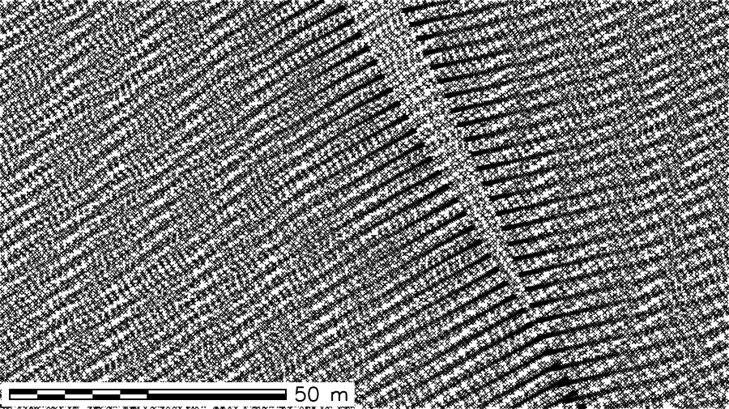
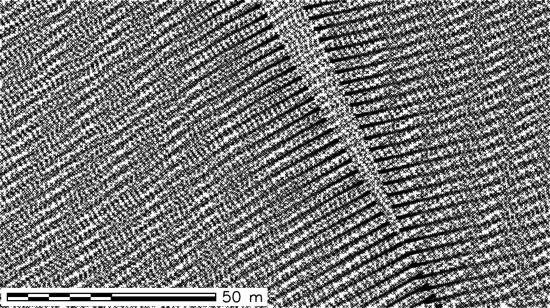

Integration and Analysis of Lidar and UAS Surveys
to Study Coastal Sand Dunes Evolution and
Changes in Field Microtopography
Helena Mitasova
A. Petrasova, V. Petras, J. Jeziorska, C. Kling


Data acknowledgment: NOAA digital coast, NC Floodplain mapping, USGA/NASA/NOAA coastal mapping, NC NGAT UAS mapping
Multitemporal elevation data
- Lidar surveys along North Carolina coast since 1996
- UAS and SfM made 3D mapping widely accessible
- monitoring dynamic landscapes is now possible at increasingly finer spatial and temporal resolutions
- rapid evolution of technology leads to data with varied properties: often we have to work with multitemporal data rather than time-series
Lidar-based DSM: 1996 and 2008, differences in coverage, accuracy, point density
GRASS GIS temporal framework
Efficient management and analysis of multitemporal 2D/3D raster and vector data
Gebbert, S., Pebesma, E., 2014. A temporal GIS for field based environmental modeling. Environmental Modelling and Software 53, 1-12.


Jockey's Ridge sand dunes
- Largest active dunes on the East coast, state park with static boundaries
- Management challenges: wind blown sand covers structures and roads outside the park, dune lost elevation
 
Mitas, O., Mitasova, H.; Brothers, G., Weaver, K., 2014, Managing Dune Landscape Changes at Jockey's Ridge State Park, North Carolina, Tourism in Marine Environments 9(3-4), pp. 155-167.
Coastal multitemporal elevation data
- photogrammetry: 1974, 1995, 1998
- lidar: 1999, 2001,2007,2008,2009,2012,2014,2015
- structure from motion from UAS imagery: 2016,2017



1974 1998 1999
 


2001 2009 2015
Processing DEMs
- data georeferenced to nc_nsm, point densities were analyzed and 1m resolution was selected for analysis
- Interpolation by RST, manually adjusted parameters, Correcting systematic error, UAS survey issues
- Accuracy sufficient to capture dune evolution
common spatial extent,
profile along road showing systematic errors (from Katie or make new)

Processing DEMs: interpolation
Impact of RST tension on surface slope and curvatures
Parameters were selected to reduce noise but preserve dune features

H.Mitasova, H., Mitas, L. and Harmon, R.S., 2005, Simultaneous spline interpolation and topographic analysis for lidar elevation data: methods for Open source GIS, IEEE GRSL 2(4), pp. 375- 379.
Exploring DEMs time series
Complex pattern of changes - loss and increase in elevation
ADD map with location of queried points, difference map 1974 - 2015


DEM time series visualization
Jockey's Ridge 1974 - 2017: southward migration, landform transformation
from crescentic dune to sand starved, fast moving parabolic dune

DEM time series visualization 1974 - 2017
Annual dynamics from Planet imagery
Satellite imagery at 3m resolution, September 2017 - July 2018, captures impact of storm in March 2018 with large ripples similar to those observed post Mathews
Planet: world’s largest constellation of Earth-imaging (micro) satellites providing daily observations for entire Earth at 3m resolution
Landform change: contours time series
Contours capture the landform change but they are hard to read 16m
16m
 20m
20m

Space-Time cube visualization
DEM time series is converted into space-time voxel model in TGRASS and evolution of a contour is represented as isosurface: 16m and 20m


Sand volume and redistribution, dune core
total sand volume is stable, but the core (sand that has not moved) is shrinking
EXPLAIN core/envelope here and show shrinking of core

Peak elevation change
- linear trend in loss of peak elevation at 0.3 m/yr, from 43 m to 20 m


Peak elevation change
- growth between 1917 - 1949, reconstruct DEM from 1949 and 60s imagery

Jockey's Ridge story
The 43 m high dune was a transient landform,
transitioned between forest and active dunes over the past 2000 years


Dune in early 1900 and in 2016, sand removal at the park boundary in 2003
Agricultural field monitoring
UAS based monitoring of field microtopography and crop topography

Ultra-high resolution water flow: UAS mapping
Modeling impact of tillage and rills on surface water flow using 0.2m DEM derived by SfM based on UAS imagery
Conclusion
- Multitemporal mapping of evolving landforms brings new insights into landscape dynamics
- next step - evolution of urban topography
2015 lidar updated with 2018 UAS data: forested are replaced by a new school
Open Science
Developing open source software and contributing to OSGeo projects:
GRASS GIS https://grass.osgeo.org/
Tangible Landscape tangible-landscape.github.io
Open access educational material:
NCSU GeoForAll Lab Courses and Workshops https://geospatial.ncsu.edu/geoforall/courses.html